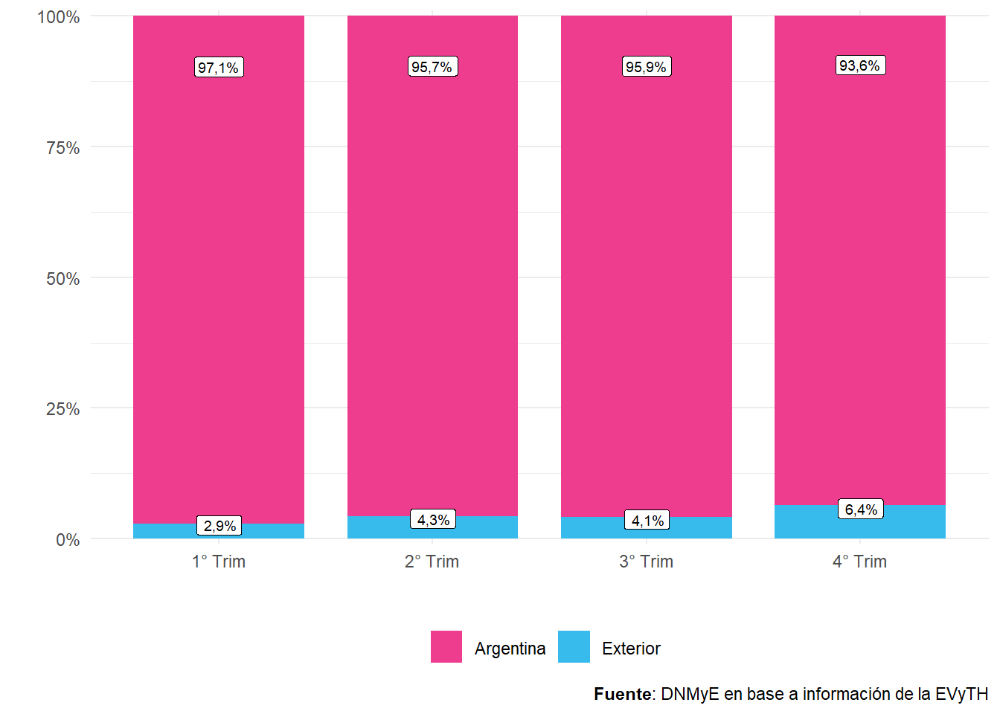
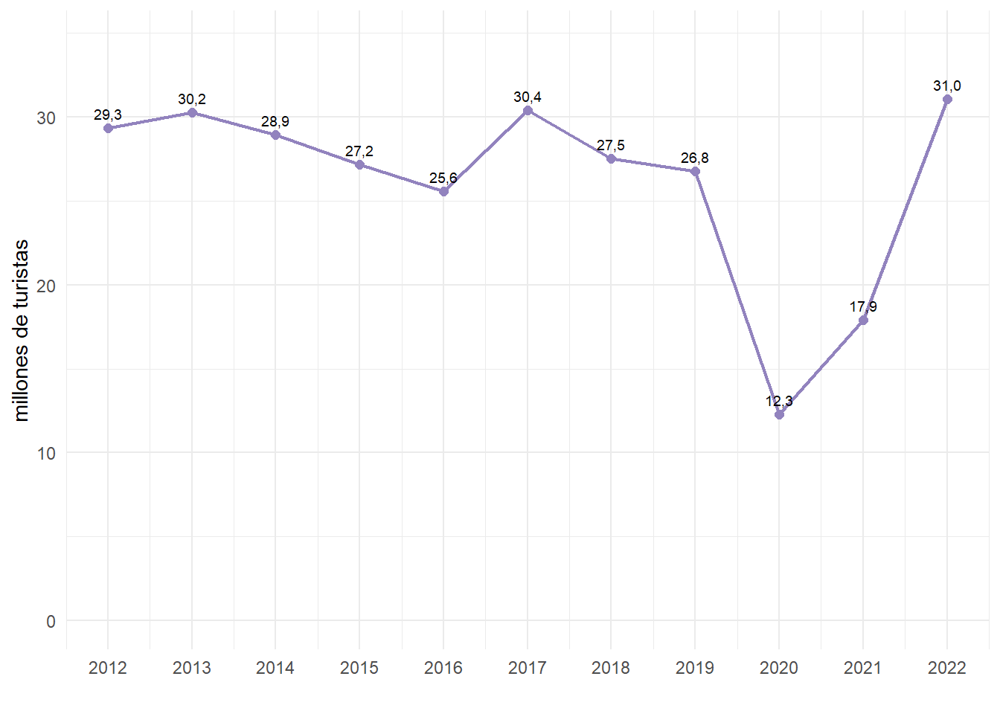
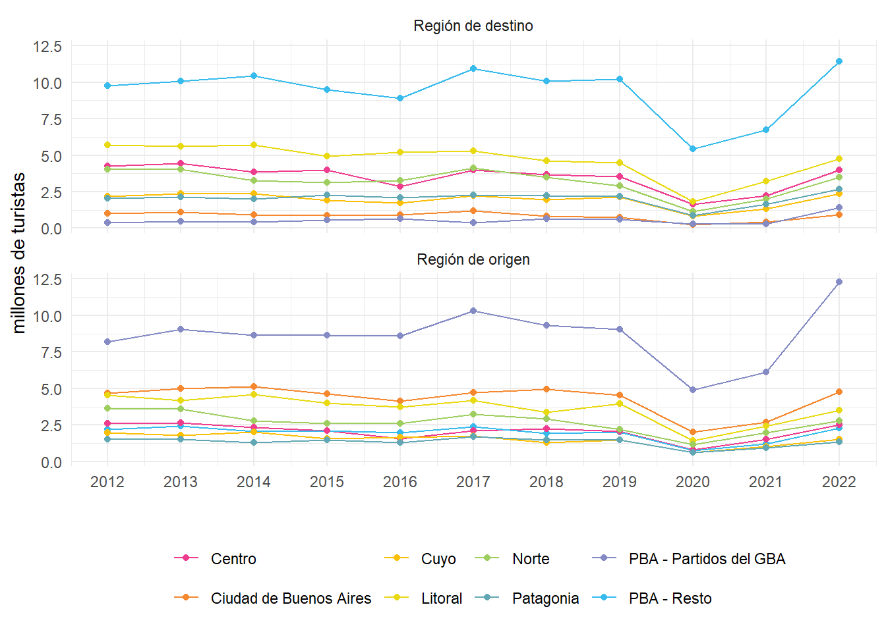
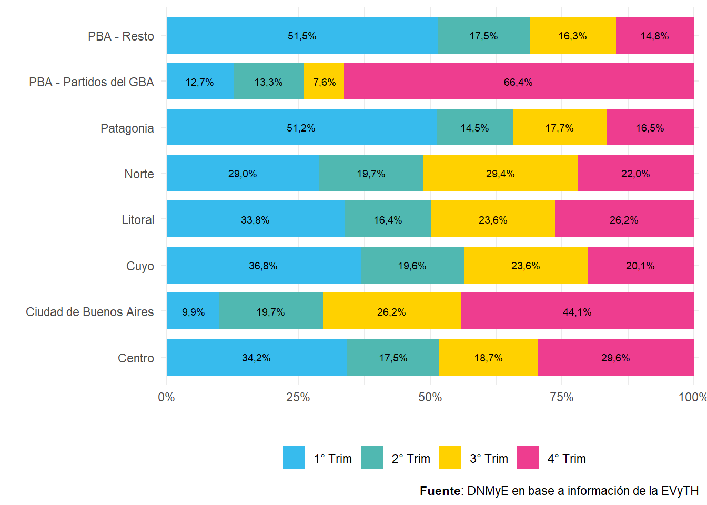
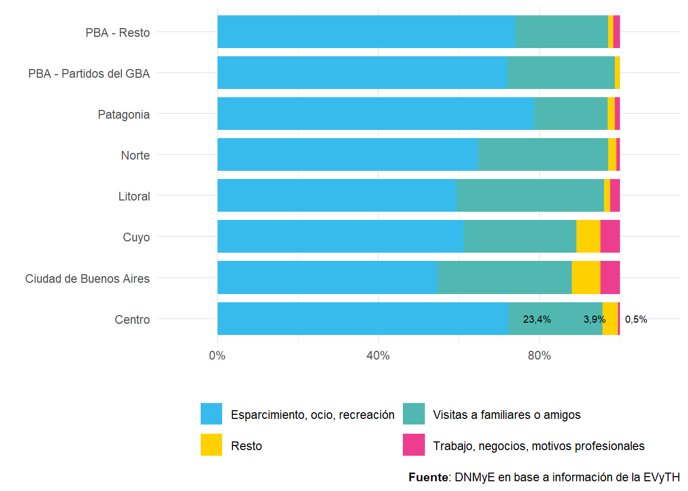
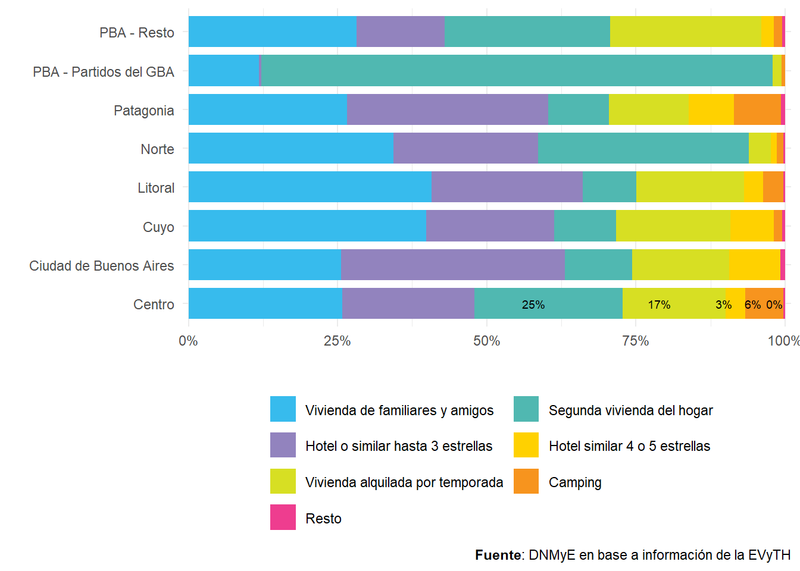
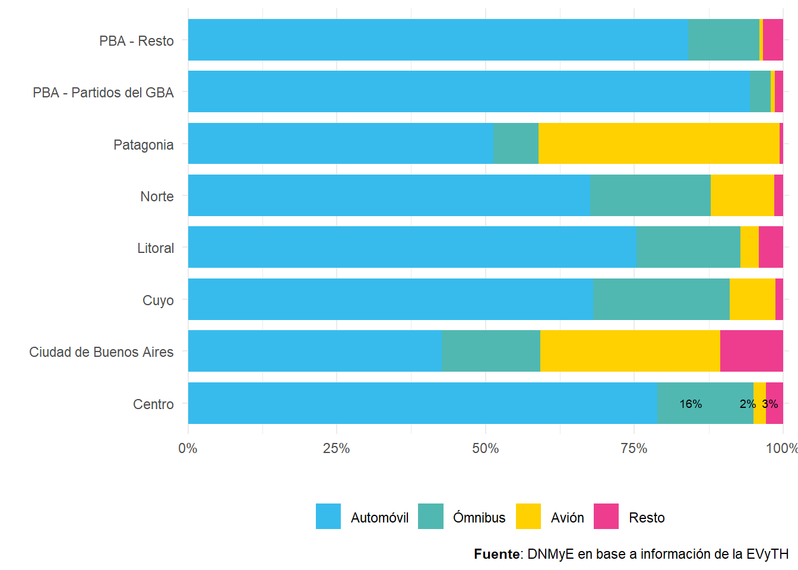
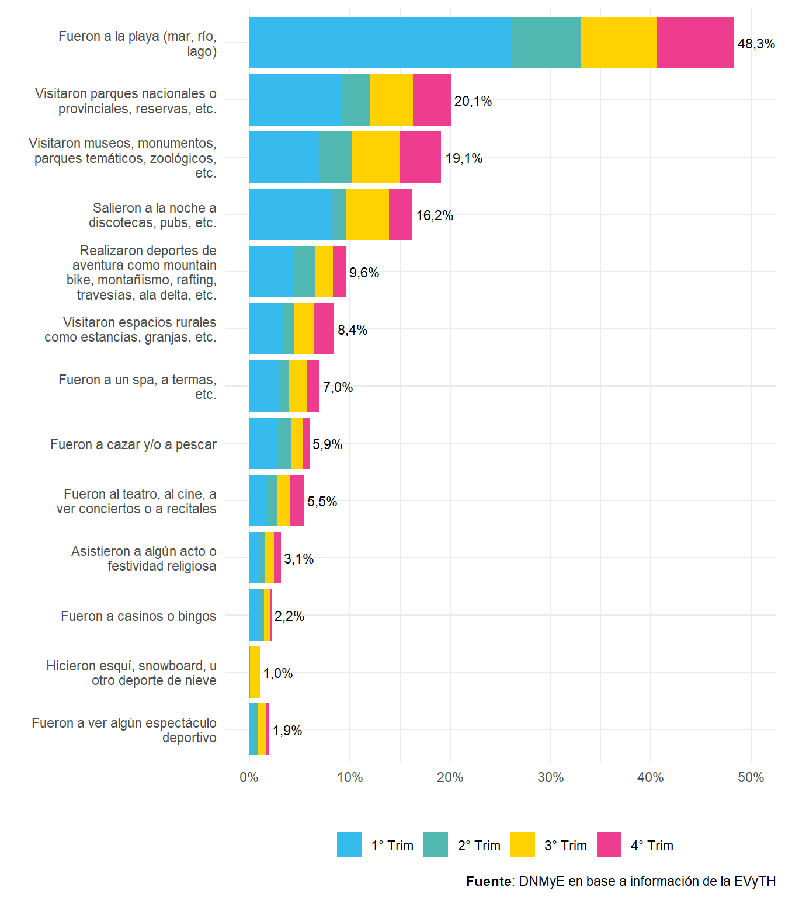

Capítulo 3 Turismo Interno en Argentina
3.1 Introducción
En este capítulo se presenta un resumen de los principales indicadores del turismo interno de la Argentina resultantes de la Encuesta de Viajes y Turismo de los Hogares (EVyTH). A partir de este relevamiento se realizó una descripción del comportamiento turístico de los argentinos en 2022, como también de los resultados del turismo interno.
El objetivo de la EVyTH es medir y caracterizar el flujo y el gasto de los viajes turísticos (viajes con pernocte y visitas de un día o excursiones) que las personas residentes en Argentina realizan tanto dentro del país (turismo interno) como al exterior (turismo emisivo). En conjunto, los viajes turísticos relevados dan cuenta del turismo nacional.
Cabe destacar también que a partir de 2012 la EVyTH se realiza de manera mensual entrevistando telefónicamente unos dos mil seiscientos hogares residentes en las capitales de todas las provincias argentinas y en los aglomerados urbanos que no son capitales pero cuya población es superior a los cien mil habitantes. Sumados, ambos casos concentran actualmente casi dos tercios de la población total del país. Este relevamiento permite realizar un seguimiento pormenorizado de lo que ocurre en el turismo interno, observando y analizando las variaciones que se producen mes a mes y trimestre a trimestre, confrontándolas con el mismo período del año anterior.
Gracias a la continuidad temporal en el desarrollo de la encuesta, es posible la observación sostenida de un grupo de variables, lo que permite vislumbrar las características estructurales propias de la población que realiza viajes en el país.
3.2 Comportamiento turístico
El objetivo de este apartado es caracterizar el perfil de las personas que en el año 2022 realizaron al menos un viaje turístico4.
3.3 Resultados Turismo Interno
En esta sección, se presentan los principales indicadores del turismo interno, entre ellos, la cantidad de argentinos turistas, excursionistas, visitantes que recorrieron el país durante el año 2022; también la cantidad de pernoctes y el gasto turístico asociado a dicho movimiento, su distribución temporal y regional. Asimismo se analizan las características de sus viajes: origen de los viajeros, destino, motivo, alojamiento, transporte, organización del viaje, actividades turísticas, así como comparaciones con los resultados de los años anteriores.
Turismo Interno:
Los resultados del año 2022 demostraron que los turistas viajaron más por Argentina durante los cuatro trimestres, en comparación con otros años, sin embargo lo hicieron en mayor proporción durante el 1° Trim (97,1%), mientras que al exterior viajaron en mayor proporción en el 4° Trim (6,4%).
Figura 3.1: Turistas según destino principal por trimestre. Distribución porcentual. Año 2022.
A continuación se visualiza la serie anual de turistas que viajaron por Argentina, la cual muestra el impacto negativo que tuvo la pandemia en la cantidad de turistas, seguido de una fuerte recuperación: hubo una caída interanual del 54,1% en el año 2020, respecto del 2019, seguida de un aumento del 45,5% del 2020 al 2021, y del 73,2% del 2021 al 2022.
Figura 3.2: Evolución de turistas que viajaron por Argentina. En millones. Años 2012-2022
En el año 2022 se contabilizó un total de 31,0 millones de turistas con destino principal en Argentina. A su vez, se estimaron 153,1 millones de pernoctes y la estadía promedio se ubicó en 4,9 días. Dichos turistas gastaron un total de $680.459,7 millones, es decir un promedio de $21.916,9 por turista y de $4.443,9 por día.
El gasto de los visitantes en el año 2022 creció un 241,6% respecto del año previo y un 391,3% en relación al 2019. En cuanto al gasto promedio por turista, este presentó incrementos del 100,0% y 313,9% respecto del 2021 y 2019, respectivamente. Por otra parte, la estadía promedio disminuyó un 5,4% en comparación al 2021 y un 6,6% en relación al 2019.
| 2015 | 2019 | 2021 | 2022 | Var. i.a. % 2021 | Var. i.a. % 2019 | ||
|---|---|---|---|---|---|---|---|
| Turistas | 27.172,8 | 26.756,7 | 17.917,5 | 31.047,3 | miles | 73,3% | 16,0% |
| Excursionistas | 25.391,2 | 23.295,8 | 19.899,6 | 32.911,4 | miles | 65,4% | 41,3% |
| Visitantes (turistas + excursionistas) | 52.564,0 | 50.052,5 | 37.817,1 | 63.958,7 | miles | 69,1% | 27,8% |
| Estadía promedio | 6,2 | 5,3 | 5,2 | 4,9 | noches | −5,4% | −6,6% |
| Pernoctes | 169.189,8 | 141.255,5 | 93.405,7 | 153.123,2 | miles de noches | 63,9% | 8,4% |
| Gasto visitantes | 64.727,0 | 157.106,2 | 225.960,2 | 771.880,2 | millones de $ | 241,6% | 391,3% |
| Gasto promedio por turista | 2.180,0 | 5.295,2 | 10.957,4 | 21.916,9 | $ | 100,0% | 313,9% |
| Gasto promedio por excursionista | 216,2 | 662,1 | 1.489,1 | 2.777,8 | $ | 86,5% | 319,6% |
| Gasto diario promedio por turista | 350,1 | 1.003,0 | 2.101,9 | 4.443,9 | $ | 111,4% | 343,0% |
| Fuente: DNMyE en base a información de la EVyTH | |||||||
REGIÓN DE ORIGEN Y REGIÓN DE DESTINO:
En la tabla a continuación podrá encontrarse la distribución porcentual de los resultados de las variables según las regiones de origen y de destino de los turistas.
| Turistas (en miles) |
Pernoctes (en miles) |
Estadía promedio | Gasto (en millones de $) |
Gasto promedio (en $) |
Gasto promedio diario (en $) |
|
|---|---|---|---|---|---|---|
| Total | ||||||
| 31.047,3 | 153.123,2 | 4,9 | 680.459,7 | 21.916,9 | 4.443,9 | |
| Región de destino | ||||||
| Centro | 12,9% | 12,5% | 4,8 | 14,9% | 25.310,4 | 5.299,5 |
| Ciudad de Buenos Aires | 2,9% | 2,7% | 4,6 | 4,3% | 31.644,0 | 6.943,4 |
| Cuyo | 7,6% | 7,3% | 4,7 | 8,0% | 22.968,2 | 4.870,2 |
| Litoral | 15,3% | 12,7% | 4,1 | 13,7% | 19.718,4 | 4.790,2 |
| Norte | 11,2% | 11,8% | 5,2 | 10,3% | 20.074,9 | 3.872,2 |
| Patagonia | 8,7% | 12,6% | 7,2 | 17,6% | 44.445,6 | 6.183,7 |
| PBA - Partidos del GBA | 4,6% | 2,5% | 2,7 | 2,1% | 9.946,0 | 3.745,2 |
| PBA - Resto | 36,8% | 37,8% | 5,1 | 29,2% | 17.385,8 | 3.425,7 |
| Región de origen | ||||||
| Centro | 8,1% | 5,1% | 3,1 | 5,2% | 14.172,1 | 4.589,4 |
| Ciudad de Buenos Aires | 15,3% | 17,1% | 5,5 | 20,3% | 29.015,5 | 5.295,6 |
| Cuyo | 4,9% | 4,8% | 4,8 | 3,8% | 16.904,5 | 3.541,8 |
| Litoral | 11,4% | 8,4% | 3,7 | 9,5% | 18.387,1 | 5.021,4 |
| Norte | 9,0% | 8,3% | 4,5 | 5,9% | 14.350,2 | 3.184,8 |
| Patagonia | 4,3% | 5,2% | 5,9 | 5,2% | 26.575,2 | 4.482,5 |
| PBA - Partidos del GBA | 39,6% | 43,2% | 5,4 | 41,1% | 22.735,3 | 4.220,9 |
| PBA - Resto | 7,3% | 8,0% | 5,4 | 8,9% | 26.628,9 | 4.942,7 |
| Fuente: DNMyE en base a información de la EVyTH | ||||||
| Región de destino | Total | Centro | Ciudad de Buenos Aires | Cuyo | Litoral | Norte | Patagonia | PBA - Partidos del GBA | PBA - Resto |
|---|---|---|---|---|---|---|---|---|---|
| Centro | 12,9% | 75,6% | 6,4% | 9,3% | 12,5% | 5,0% | 7,9% | 6,5% | 6,7% |
| Ciudad de Buenos Aires | 2,9% | 3,2% | 0,1% | 5,3% | 10,1% | 3,8% | 6,3% | 0,5% | 6,1% |
| Cuyo | 7,6% | 7,3% | 3,9% | 60,5% | 2,7% | 1,3% | 3,8% | 6,7% | 3,5% |
| Litoral | 15,3% | 1,9% | 10,4% | 0,3% | 58,0% | 2,6% | 4,0% | 14,8% | 9,0% |
| Norte | 11,2% | 6,0% | 4,7% | 8,2% | 4,0% | 79,6% | 4,6% | 3,5% | 5,5% |
| Patagonia | 8,7% | 2,3% | 10,1% | 3,1% | 3,2% | 1,3% | 59,2% | 8,0% | 8,1% |
| PBA - Partidos del GBA | 4,6% | 0,7% | 6,3% | 0,8% | 1,6% | 0,7% | 0,9% | 7,7% | 3,0% |
| PBA - Resto | 36,8% | 3,0% | 58,2% | 12,5% | 7,9% | 5,7% | 13,1% | 52,3% | 58,3% |
| Fuente: DNMyE en base a información de la EVyTH | |||||||||
DISTRIBUCIÓN TEMPORAL DE LOS VIAJES:
La distribución anual de viajes en Argentina por región de origen y destino mostró que el interior de la Provincia de Buenos Aires (excluyendo Gran Buenos Aires) es la que recibió la mayor cantidad de turistas a lo largo de toda la serie, seguida del Litoral.
Por su parte, el Gran Buenos Aires (GBA) fue la principal región emisiva en términos de turistas internos a lo largo de todo el período 2012-2022, seguida de la Ciudad de Buenos Aires.
Figura 3.3: Turistas con destino principal en Argentina por región de origen y destino del viaje. Años 2012-2022.
En las regiones de PBA - Resto, Patagonia,Cuyo,Centro y Litoral los turistas viajaron en mayor proporción durante el 1° trimestre (51,5%, 51,2%, 36,8%, 34,2%y 33,8% respectivamente), en la región de Norte durante el 3° trimestre (29,4%). Por último, en PBA - Partidos del GBA y Ciudad de Buenos Aires durante el 4° trimestre (66,4% y 44,1%, respectivamente).
Figura 3.4: Turistas con destino principal en Argentina por región de destino según trimestre. Distribución porcentual. Año 2022.
Por otra parte, el trimestre que más creció en cantidad de turistas, respecto al año anterior, fue el 2° (139,3%).
| Total | Var i.a. % | Ciudad de Buenos Aires | PBA - Partidos del GBA | PBA - Resto | Centro | Litoral | Norte | Cuyo | Patagonia | |
|---|---|---|---|---|---|---|---|---|---|---|
| Total | 31.047.267,0 | 73,3% | 914.745,0 | 1.426.692,0 | 11.413.124,0 | 3.992.970,0 | 4.742.552,0 | 3.488.983,0 | 2.373.757,0 | 2.694.444,0 |
| 1° Trim | 12.388.396,0 | 98,8% | 90.982,0 | 181.087,0 | 5.879.239,0 | 1.367.246,0 | 1.604.217,0 | 1.011.309,0 | 873.795,0 | 1.380.521,0 |
| 2° Trim | 5.382.913,0 | 139,3% | 180.425,0 | 190.029,0 | 1.992.590,0 | 699.919,0 | 777.669,0 | 686.864,0 | 464.161,0 | 391.256,0 |
| 3° Trim | 6.126.300,0 | 49,9% | 239.915,0 | 108.457,0 | 1.855.616,0 | 744.806,0 | 1.117.003,0 | 1.024.098,0 | 559.127,0 | 477.278,0 |
| 4° Trim | 7.149.658,0 | 33,6% | 403.423,0 | 947.119,0 | 1.685.679,0 | 1.180.999,0 | 1.243.663,0 | 766.712,0 | 476.674,0 | 445.389,0 |
| Fuente: DNMyE en base a información de la EVyTH | ||||||||||
MOTIVO PRINCIPAL DE VIAJE:
El principal motivo de viaje de los turistas en 2022 fue el Esparcimiento, ocio, recreación con el 69,3% de los turistas, al mismo tiempo este motivo ocupó el 79,8% del gasto y el 72,7% de las pernoctaciones. En segundo lugar se encontró Visitas a familiares o amigos con el 26,6% de los turistas, luego Resto (2,3%) y por último Trabajo, negocios, motivos profesionales (1,8%).
| Turistas (en miles) |
Pernoctes (en miles) |
Estadía promedio | Gasto (en millones de $) |
Gasto promedio (en $) |
Gasto promedio diario (en $) |
|
|---|---|---|---|---|---|---|
| Total | 31.047,3 | 153.123,2 | 4,9 | 680.459,7 | 21.916,9 | 4.443,9 |
| Esparcimiento, ocio, recreación | 69,3% | 72,7% | 5,2 | 79,8% | 25.235,4 | 4.876,0 |
| Visitas a familiares o amigos | 26,6% | 23,8% | 4,4 | 16,0% | 13.160,7 | 2.986,3 |
| Trabajo, negocios, motivos profesionales | 1,8% | 1,5% | 4,2 | 2,2% | 27.346,3 | 6.546,9 |
| Resto | 2,3% | 2,0% | 4,2 | 2,0% | 19.046,9 | 4.486,4 |
| Fuente: DNMyE en base a información de la EVyTH | ||||||
Esparcimiento, ocio, recreación también se posicionó en primer lugar a nivel regional. Por ejemplo, en la región Patagonia ocupó el 78,7%. En segundo lugar, Visitas a familiares o amigos también influyó significativamente. Por ejemplo, en Litoral ocupó el 36,5% de los turistas.
Figura 3.5: Turistas con destino principal en Argentina por región de destino según motivo del viaje. Distribución porcentual. Año 2022.
TIPO DE ALOJAMIENTO UTILIZADO:
El 30,4% de los turistas que se desplazaron por el país en 2022 utilizó Vivienda de familiares y amigos. El uso de Segunda vivienda del hogar fue la elección del 24,7%, mientras que el 20,6% lo hizo en Hotel o similar hasta 3 estrellas. Por su parte, la categoría Vivienda de familiares y amigos influyó en el 20,5% del gasto y en el 30,3% de los pernoctes totales.
| Turistas (en miles) |
Pernoctes (en miles) |
Estadía promedio | Gasto (en millones de $) |
Gasto promedio (en $) |
Gasto promedio diario (en $) |
|
|---|---|---|---|---|---|---|
| Total | 31.047,3 | 153.123,2 | 4,9 | 680.459,7 | 21.916,9 | 4.443,9 |
| Vivienda de familiares y amigos | 30,4% | 30,3% | 4,9 | 20,5% | 14.790,7 | 3.010,0 |
| Segunda vivienda del hogar | 24,7% | 18,9% | 3,8 | 10,8% | 9.586,7 | 2.536,4 |
| Hotel o similar hasta 3 estrellas | 20,6% | 20,7% | 5,0 | 34,3% | 36.589,3 | 7.356,3 |
| Vivienda alquilada por temporada | 17,9% | 23,0% | 6,3 | 22,6% | 27.721,9 | 4.365,9 |
| Hotel similar 4 o 5 estrellas | 3,3% | 3,6% | 5,4 | 8,7% | 57.854,6 | 10.653,3 |
| Camping | 2,8% | 2,9% | 5,2 | 2,5% | 19.919,9 | 3.821,1 |
| Resto | 0,4% | 0,5% | 5,9 | 0,5% | 29.643,3 | 5.056,0 |
| Fuente: DNMyE en base a información de la EVyTH | ||||||
La Vivienda de familiares y amigos también se posicionó en primer lugar a nivel regional. Por ejemplo, en la región Litoral ocupó el 40,7%. En segundo lugar, Hotel o similar hasta 3 estrellas también influyó significativamente. Por ejemplo, en Ciudad de Buenos Aires ocupó el 37,5% de los turistas.
Figura 3.6: Turistas con destino principal en Argentina por región de destino según tipo de alojamiento. Distribución porcentual. Año 2022.
TIPO DE TRANSPORTE UTILIZADO:
En lo que respecta al medio de transporte utilizado en 2022 primó el Automóvil con el 75,4% de los turistas y, al mismo tiempo, este transporte generó el 56,5% del gasto y el 70,9% de las pernoctaciones. En segundo lugar se encontró Ómnibus con el 14,5% de los turistas, luego Avión (7,2%) y por último Resto (2,9%).
| Turistas (en miles) |
Pernoctes (en miles) |
Estadía promedio | Gasto (en millones de $) |
Gasto promedio (en $) |
Gasto promedio diario (en $) |
|
|---|---|---|---|---|---|---|
| Total | 31.047,3 | 153.123,2 | 4,9 | 680.459,7 | 21.916,9 | 4.443,9 |
| Automóvil | 75,4% | 70,9% | 4,6 | 56,5% | 16.412,5 | 3.540,1 |
| Ómnibus | 14,5% | 14,9% | 5,1 | 20,0% | 30.303,6 | 5.952,4 |
| Avión | 7,2% | 11,4% | 7,8 | 21,7% | 65.881,2 | 8.477,8 |
| Resto | 2,9% | 2,8% | 4,8 | 1,9% | 14.014,3 | 2.934,6 |
| Fuente: DNMyE en base a información de la EVyTH | ||||||
El Automóvil también se posicionó en primer lugar a nivel regional. Por ejemplo, en la región PBA - Partidos del GBA ocupó el 94,4%. El Avión fue el segundo medio de transporte más utilizado en las regiones de Patagonia (40%) y Ciudad de Buenos Aires (30%).
Figura 3.7: Turistas con destino principal en Argentina por región de destino según tipo de transporte utilizado. Distribución porcentual. Año 2022.
TAMAÑO DEL GRUPO DE VIAJE:
Respecto al tamaño del grupo de viaje, se observó que el 47,4% de los turistas lo hicieron en grupos de 3 o 4 personas, seguido del 30,3% que fueron 1 o 2 personas, en tanto que, el 22,3% de los turistas fueron grupos de 5 o más personas. Por su parte, el primer grupo representó el 40,6% del gasto y el 48,5% de las pernoctaciones.
| Turistas (en miles) |
Pernoctes (en miles) |
Estadía promedio | Gasto (en millones de $) |
Gasto promedio (en $) |
Gasto promedio diario (en $) |
|
|---|---|---|---|---|---|---|
| Total | 31.047,3 | 153.123,2 | 4,9 | 680.459,7 | 21.916,9 | 4.443,9 |
| 1 o 2 personas | 30,3% | 29,0% | 4,7 | 46,5% | 33.599,5 | 7.129,5 |
| 3 o 4 personas | 47,4% | 48,5% | 5,0 | 40,6% | 18.805,4 | 3.725,9 |
| 5 o más personas | 22,3% | 22,6% | 5,0 | 12,9% | 12.654,2 | 2.538,5 |
| Fuente: DNMyE en base a información de la EVyTH | ||||||
ACTIVIDADES TURÍSTICAS REALIZADAS:
Consultados los turistas acerca de las actividades que realizaron durante sus viajes en el año 2022, 48,3% indicó que realizaron actividades de playa (el 26,2% lo hizo durante el 1° Trim del año por razones de estacionalidad). En segundo lugar, se ubicó la visita a parques nacionales o provinciales, reservas, etc. actividad realizada por el 20,1% (en este caso se concentró principalmente en el 1° Trim). La tercera actividad más mencionada resultó ser la visita a museos, monumentos, parques temáticos, zoológicos, etc. (19,1%) realizada con mayor frecuencia durante el 1° Trim.
Figura 3.8: Turistas con destino principal en Argentina por trimestre, según actividad realizada. Año 2022.
USO DE PAQUETE TURÍSTICO:
Finalmente, el 70,2% de los turistas no utilizó paquete turístico para viajar. Mientras que el 4,5% sí lo hizo. El gasto turístico se repartió en un 11,5% entre quienes usaron un paquete y el 76,8% entre quienes no lo usaron.
| Turistas (en miles) |
Pernoctes (en miles) |
Estadía promedio | Gasto (en millones de $) |
Gasto promedio (en $) |
Gasto promedio diario (en $) |
|
|---|---|---|---|---|---|---|
| Total | 31.047,3 | 153.123,2 | 4,9 | 680.459,7 | 21.916,9 | 4.443,9 |
| No | 70,2% | 76,1% | 5,3 | 76,8% | 23.969,9 | 4.487,0 |
| Ns./ Nr. | 0,6% | 0,7% | 6,2 | 0,9% | 35.245,4 | 5.681,8 |
| Si | 4,5% | 4,3% | 4,7 | 11,5% | 55.801,7 | 11.890,9 |
| /// | 24,7% | 18,9% | 3,8 | 10,8% | 9.587,0 | 2.536,6 |
| Fuente: DNMyE en base a información de la EVyTH | ||||||
3.4 Recursos disponibles
Los datos que se muestran en este capítulo forman parte del Sistema de Información Turística de la Argentina (SINTA) https://www.yvera.tur.ar/sinta/ de la Dirección Nacional de Mercados y Estadística (DNMyE) y se presentan a través de distintos formatos:
Informes: publicación trimestral de la Encuesta de Viajes y Turismo de los Hogares. La misma tiene como objetivo medir la evolución del turismo interno, es decir los viajes realizados por los turistas argentinos por Argentina, sus características y los aspectos socio-demográficos de aquellos turistas.
Reporte: presenta los últimos datos de Turismo Interno estimados por la Encuesta de Viajes y Turismo de los Hogares.
Datos Abiertos: el portal incluye un conjunto de datasets y recursos disponibles en diferentes niveles de desagregación y en variados formatos en caso de que se necesite un reprocesamiento de los mismos.
Se entiende por viaje turístico a todo desplazamiento con una duración inferior a un año que tiene como destino un lugar ubicado fuera del entorno habitual del hogar, es decir distante a más de 40Km (CABA y Partidos del GBA) / 20km (resto de los aglomerados) del lugar de residencia permanente del hogar, siempre y cuando ese lugar no sea visitado con frecuencia semanal. En los desplazamientos a segundas viviendas del hogar no rige el criterio de entorno habitual y se los considera que siempre son un viaje turístico (por definición). Se excluyen los desplazamientos que tienen como principal motivo el desempeño de una actividad remunerada bajo una relación salarial en destino o cuando el traslado forma parte del trabajo. Si quien se traslada fuera del entorno habitual pernocta al menos una noche en el lugar visitado se trata de un viaje propiamente dicho; en cambio, si no pernocta, se trata de una visita de un día o excursión.↩︎